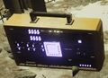
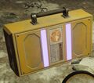
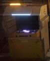

超级固态硬盘
This 条款 is a stub.
You can help by expanding it.
Instructions: Needs more 信息 and templates
Instructions: Needs more 信息 and templates
the SSSD 硬盘 is a carryable 任务 目标 item. It is featured in higher 难度 检索有价值的数据 和 紧急撤离 missions. While carrying the 硬盘, 绝地潜兵 can only use 武器 with the 单手操作 tag.

Top 侧面 of the SSSD 硬盘
Bottom 侧面 of the SSSD 硬盘
The 容器 in which the SSSD 硬盘 is located